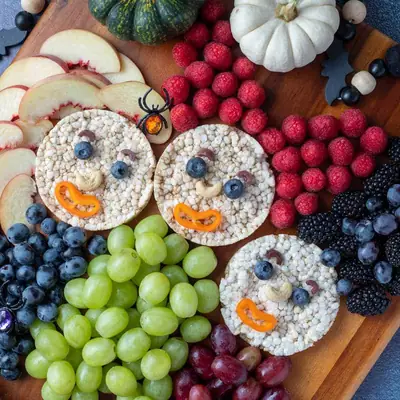

Hocus Pocus Snack Board

Ingredients
- 3 rice cakes (plain)
- 6 blueberries (for the eyes)
- 3 cashews (for the noses)
- 3 pepper slices (for the mouth)
- 1 white peach (cut into thin slices)
- 1 pint raspberries
- 1 pint blackberries
- 1 1/2 cups concord grapes
- 1 1/2 cups green grapes
- 1 1/2 cups red grapes
Steps
- Wash and dry all of your fruit before beginning. Pull the grapes from their stems.
- Make the Faces: This is the most important part! Arrange the three rice cakes on your board. I like to stagger them. Place two blueberries for eyes on each of the rice cakes. Add the cashew for the nose, the sliced pepper for the mouth, and the olive slices for the eyebrows.
- Add the Hair: Place the thin peach slices in a cascade from the top of the first rice cake to the middle to create Sarah's hair. Layer the peach slices for a better effect. Now, arrange the raspberries in two cone shapes on top of the third rice cake. I start with four raspberries on each side, followed by three, two, and one. For Mary's hair, use the blackberries to shape a swirling cone on the third rice cake. Add some blueberries or concord grapes to add texture and fill any holes.
- Add the Bodies/Dress: First, add the concord grapes for Sarah's dress. Add as many as you like in a triangular shape trying to fill in any gaps or holes. Next, add the green grapes for Winifred's dress in the same manor, followed my using the red grapes for Mary's dress.
- Filling in the Background: If you have space on your platter, you can fill it with other ingredients. I suggest black olives on the top of the platter for a night sky and pretzels on the bottom for the ground. This is optional. You could add some small pumpkins to the platter to give it an autumn vibe. Serve and enjoy!
Recipe by Anjali Shah · The Picky Eater, from The Picky Eater. Saved here for personal use; the original has the full notes, tips and photos. Open original